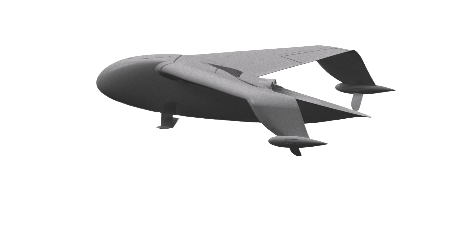
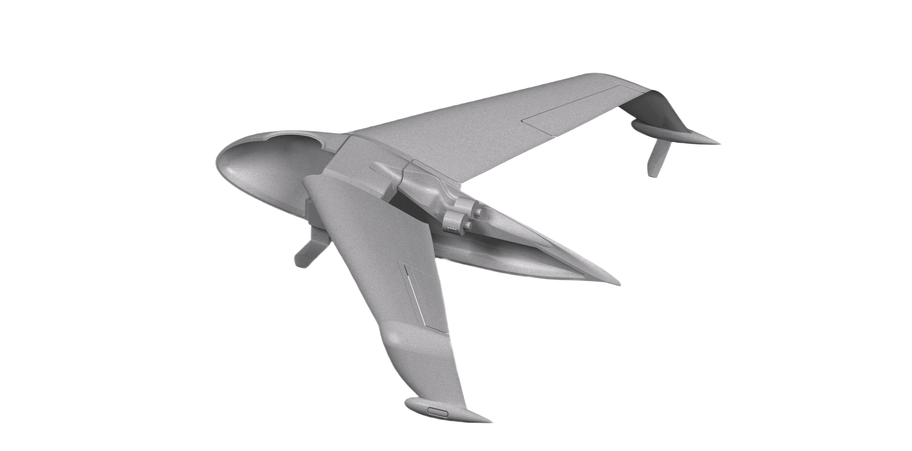
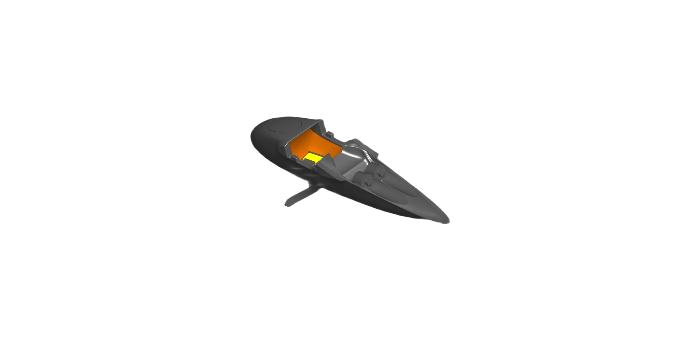
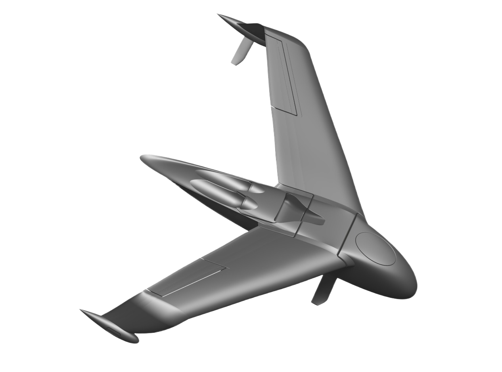

The U-MAV.
A 5.2-metre mono-structure airframe with microjet propulsion and hydrofoils — purpose-built to take off from water, cruise in ground effect, and stay invisible to the sensors hunting it.
Renders
The hardware.
Design renders of the full-scale airframe — manta planform, dorsal microjets, anhedral wingtip floats and the XL avionics bay.






Specification
Numbers that fly.
// Propulsion: microjet — UAE / Taiwan · 2 × 240 N or 1 × 450 N. Sea-state 2–3 capable. * indicative, prototype envelope.
Characteristics
Engineered for payload,
reach and silence.
When fully loaded, the operational possibilities are many — and every design choice serves the mission.
Large internal volume
An XL avionics bay swallows mission systems other airframes can't carry — 50×50×160 cm of payload space.
Microjet engines
Compact, high-thrust microjets (240 N × 2 or 450 N × 1) deliver high operational speed with a small acoustic and thermal footprint.
Mono-structure wing
A single integrated wing structure is easy to fabricate and assemble — fewer joints, lower cost, faster to build.
+ Payload / + range
Ground effect and an efficient airframe trade brute thrust for endurance — more on station, farther out.
High operational speed
Cruise at 200 km/h, dash to 250 — covering 4–6× the patrol area of the fast boats it replaces.
Low signature
Surface-masked flight plus a small airframe keep radar, IR and acoustic returns near the noise floor.
Unparalleled transparency
Hard to see.
Harder to hit.
- RADAR
Below the radar horizon.
At 30–50 cm the aircraft hides in sea clutter — flying super low makes it extremely hard to detect with radar.
- SONAR
Over the water, not in it.
Airborne flight leaves no hull and no wake, so it is hard to detect with sonar.
- GNSS-DENIED
GPS-less navigation.
Built to keep flying and fighting where satellite navigation is jammed or denied.
Avionics loadout
Three builds, one airframe.
A common 5.2 m platform scales from a flight-test article to a fully militarized production aircraft — controlling unit cost at volume.
| System | Cfg 1 — Flight-Test | Cfg 2 — Mission (COTS) | Cfg 3 — MIL-SPEC |
|---|---|---|---|
| Purpose | Full-scale flight-only validation | End-to-end mission verification | Militarized production build |
| Flight controller | Pixhawk 6X (no Jetson) | Holybro Pixhawk + Jetson baseboard | Custom MIL-SPEC FCC |
| AI compute | — | Jetson Orin NX (integral) | AI SoM on custom board |
| GNSS | Holybro H-RTK F9P (dual RTK) | Holybro H-RTK F9P (dual RTK) | Custom board w/ ZED-F9P |
| Airspeed | COTS single pitot | COTS dual pitot | Custom air-data (dual) |
| Power dist. | PM02D + UBEC + BEC | PM02D + UBEC + BEC | Custom PDB (eFuse + HV + monitor) |
| Mission payload | — | EO/IR · MAD · maritime radar | EO/IR · MAD · maritime radar (mil) |
| Main datalink | SiK Radio 1W | BluSDR (+ Starlink opt.) | BluSDR + Starlink |
| Mesh sub-link | WiFi HaLow | WiFi HaLow | WiFi HaLow |
| Satcom | Starlink Maritime (opt.) | Starlink Maritime (opt.) | Starlink Maritime |
| Connectors | IP67 | IP67 | MIL-DTL-38999 circular |
| Simulation | Simulink + X-Plane (HIL) | Simulink + X-Plane (HIL) | Simulink + X-Plane (HIL) |
| Cost / unit | Medium | Medium–High | Highest (NRE + mil parts) |
// Primary goals — Cfg 1: de-risk full-scale flight · Cfg 2: validate end-to-end mission · Cfg 3: deployable militarized aircraft, controlled unit cost at volume.
Next
See how it fights.
Defence uses, swarm and minesweeping concepts of operation — all on one airframe.